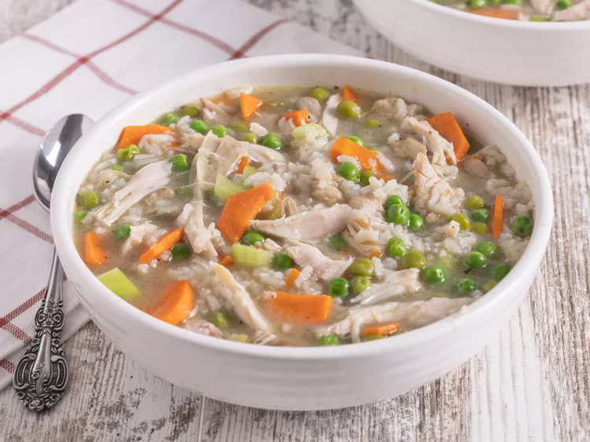

Turkey Carcass Soup

Description
This turkey soup is an easy and delicious meal that puts your turkey
carcass to good use! So save the carcass from your Thanksgiving or
Christmas dinner — and some stuffing, too — and make this tasty soup for
lunch or a light dinner the next day.
Ingredients
- 1 picked-over turkey carcass
- 1 ½ cups leftover stuffing
- 1 onion, peeled and diced
- 2 carrots, peeled and sliced
- 2 celery stalks, chopped
- 1 tablespoon poultry seasoning
- 1 teaspoon ground sage
- 2 bay leaves
- 2 ½ quarts chicken broth
- 1 cup water, or as needed (Optional)
- ½ teaspoon garlic salt, or to taste
- ground black pepper, to taste
- 2 cups (uncooked) regular long-grain white rice
- 1 (16 ounce) package frozen green peas
Steps
-
Place turkey carcass in a large, deep pot. Add stuffing, onion, carrots,
celery, poultry seasoning, sage, and bay leaves.
-
Pour in chicken broth. Add additional water if needed to cover. Bring to
a boil over medium-high heat. Reduce heat to medium and simmer, skimming
off any foam, for about 1 hour.
-
Remove carcass and any bones. Pick any meat off carcass and bones.
Return meat to the pot and discard bones and skin.
-
Season soup with garlic salt and pepper. Stir in rice and return to a
boil over medium-high heat. Reduce heat to medium and simmer for 15
minutes.
-
Stir in peas and continue to simmer until rice is tender, about 10
minutes more.
- Adjust seasonings to taste before serving.
- Serve hot and enjoy!
Go to Recipes